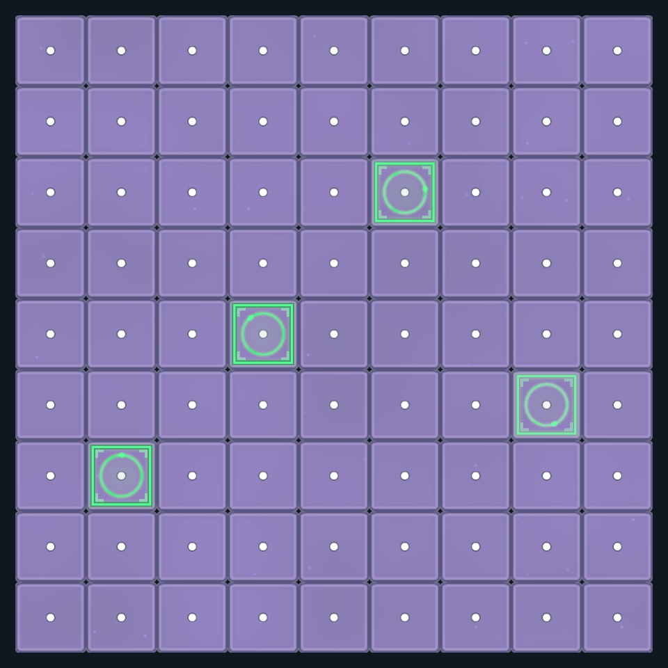
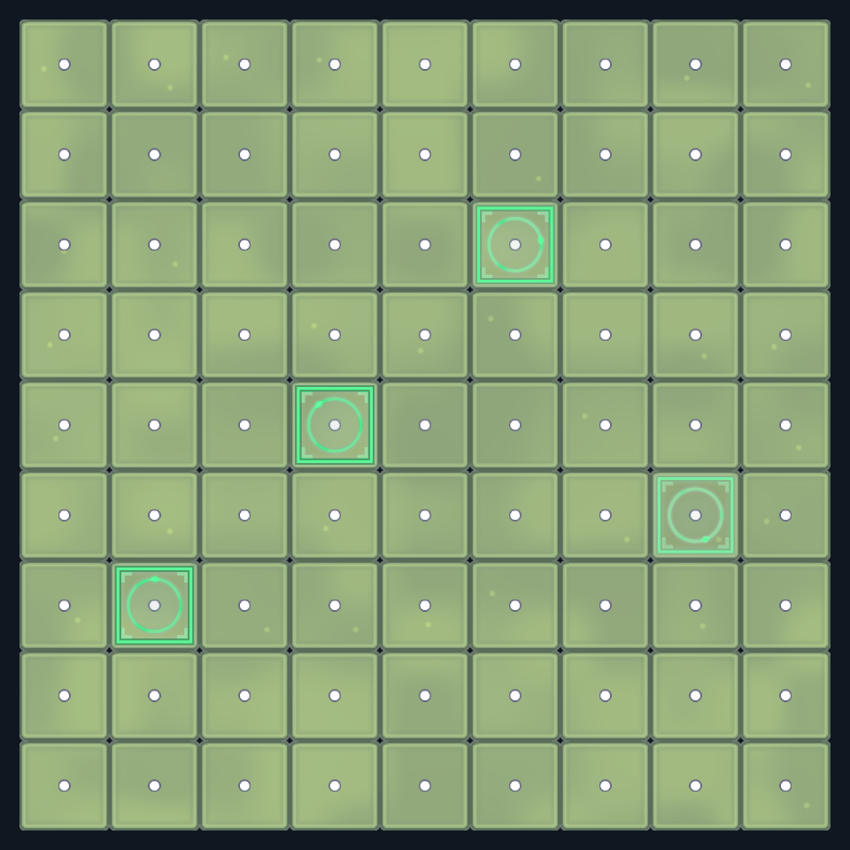
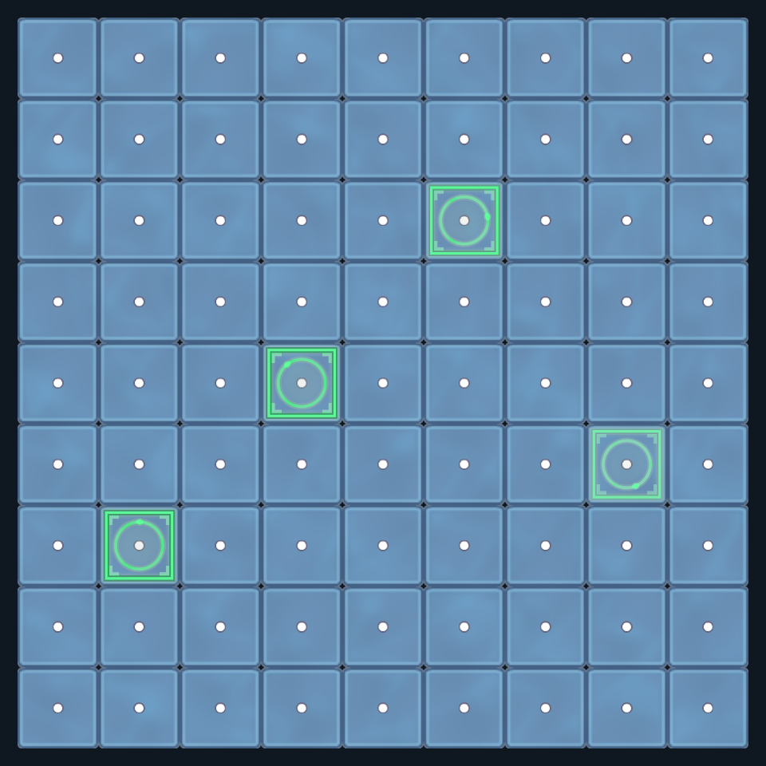
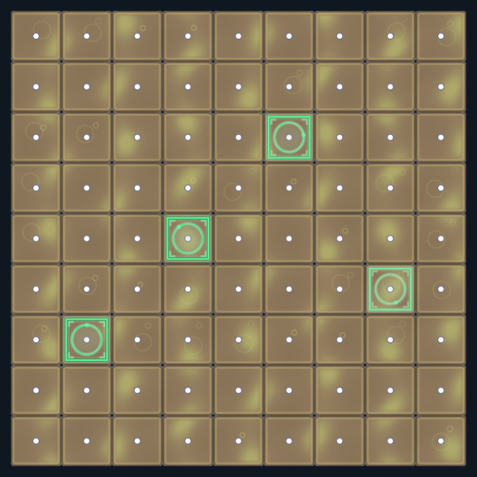
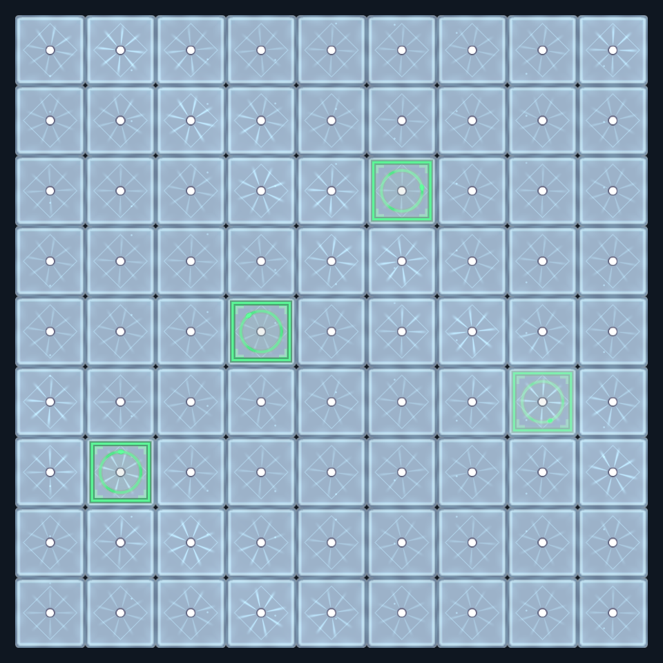
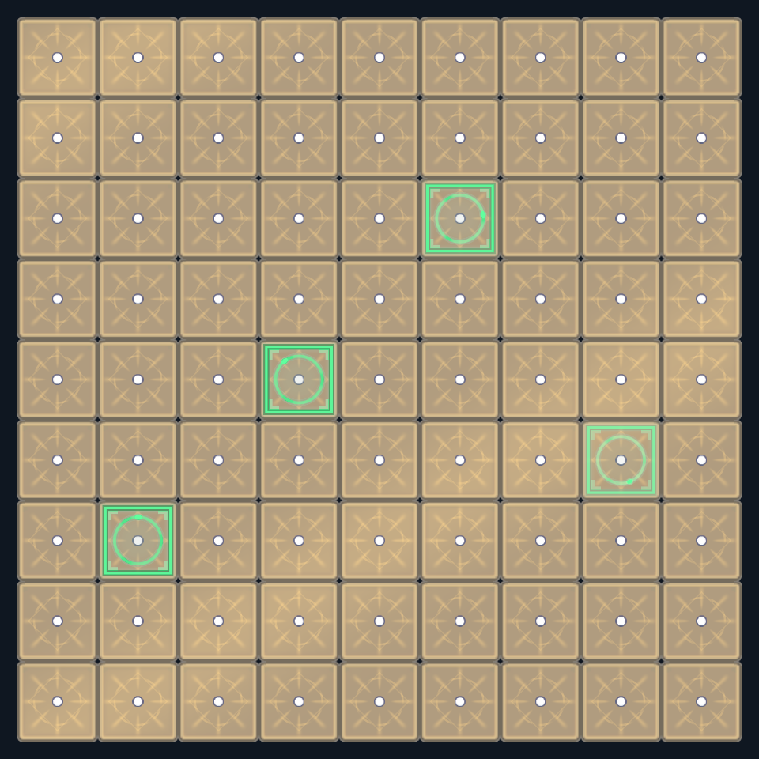

六章棋盘材质调参
前三章使用柔和星雾、漫射日光和轻微水波。第四至六章保留原有观感，开放泥流、气泡、冰晶、凝霜、飘雪、法阵和圣辉等分量的强度、速度与形态参数。



画面来自真实棋格预制体的隔离离屏绘制，不是实战截图。绿色落子提示沿用已加强的样式。



在材质 Inspector 中调整
打开 Assets/GameRes/Material/Board/，选中对应源材质，直接拖动中文滑杆。
| 章节 / 源材质 | 整体光效强度 | 整体流动速度 |
|---|---|---|
一 · Chapter01_Tutorial_Surface.mat | 0.42 | 0.45 |
二 · Chapter02_Village_Surface.mat | 0.42 | 0.48 |
三 · Chapter03_Lake_Surface.mat | 0.36 | 0.50 |
先调整整体强度和速度，再调各个分量。速度设为 0 会暂停章节材质动画；各分量的强度设为 0 可单独关闭。底色与魔法光色仍可调整。
每章独立的控制项
| 章节 | 参数 | 默认值 | 用途 |
|---|---|---|---|
| 一 | 柔和星雾强度 | 0.32 | 宽而柔和的云团，不产生条带 |
| 一 | 星点亮度 / 密度 / 大小 | 0.85 / 0.35 / 0.04 | 分别控制星点亮度、数量、半径 |
| 一 | 星雾与星点密度倍率 / 格子边缘微光 | 1.15 / 0.20 | 图案细密程度与格边光纹 |
| 二 | 柔和日光强度 | 0.24 | 没有定向光束的暖阳底光 |
| 二 | 摇曳光斑强度 / 萤火亮度 | 0.26 / 0.40 | 缓慢变化的圆润光斑、少量游动光点 |
| 二 | 光斑密度倍率 / 格子边缘微光 | 1.20 / 0.20 | 图案细密程度与格边光纹 |
| 三 | 水面明暗起伏 | 0.22 | 模拟水面高低变化 |
| 三 | 波峰与焦散强度 | 0.20 | 水波亮纹 |
| 三 | 水面反光强度 / 扩散波纹强度 | 0.10 / 0.06 | 慢速反光、跨格扩散波峰 |
| 三 | 水波密度倍率 / 格子边缘微光 | 1.00 / 0.18 | 波纹细密程度与格边光纹 |
第三章如果仍觉得明显，先降低「波峰与焦散强度」和「水面明暗起伏」。
第四章 · 沼泽泥流
Chapter04_Swamp_Surface.mat · 整体强度0.48，整体速度0.62，共14个滑杆。
| 参数 | 预设值 | 用途 |
|---|---|---|
| 泥流亮纹强度 / 泥流明暗起伏 | 0.72 / 0.31 | 光纹与底色起伏独立调整 |
| 泥流速度倍率 / 回卷幅度 / 纹理密度倍率 | 1 / 0.30 / 1 | 速度、弯曲程度与纹理细密程度 |
| 泥涡强度 / 出现密度 | 0.22 / 0.28 | 泥涡亮度与出现的格子比例 |
| 气泡亮度 / 出现密度 | 0.56 / 0.42 | 气泡亮度与出现的格子比例 |
| 气泡上浮速度倍率 / 大小倍率 | 1 / 1 | 气泡速度与大小 |
| 格子边缘微光 | 0.24 | 格边光纹 |
第五章 · 冰封凝霜
Chapter05_Ice_Surface.mat · 整体强度0.50，整体速度0.68，共18个滑杆。
| 参数 | 预设值 | 用途 |
|---|---|---|
| 冰晶常亮强度 / 流动冷光强度 | 0.33 / 0.53 | 静态冰晶与掠过的冷光 |
| 流动冷光速度倍率 / 冰晶纹理密度倍率 | 1 / 1 | 冷光速度与格内冰晶尺寸 |
| 冰纹亮度 / 线宽 | 0.32 / 0.004 | 冰纹强度与粗细 |
| 边缘凝霜强度 / 向内厚度 / 变化速度倍率 | 0.43 / 0.18 / 1 | 霜层亮度、覆盖厚度和变化速度 |
| 雪点亮度 / 出现密度 | 0.56 / 1 | 雪点亮度与出现的格子比例 |
| 雪点飘落速度倍率 / 大小 | 1 / 0.02 | 雪点速度与半径 |
| 冰面冷色压暗 / 冷光明暗起伏 / 格子边缘微光 | 0.15 / 0.27 / 0.25 | 底色压暗、冷光对比与格边亮纹 |
第六章 · 神殿圣辉
Chapter06_Temple_Surface.mat · 整体强度0.53，整体速度0.72，共16个滑杆。
| 参数 | 预设值 | 用途 |
|---|---|---|
| 圣辉放射光 / 法阵光环 / 菱形符文强度 | 0.52 / 0.48 / 0.25 | 法阵三种图案分别调整 |
| 法阵旋转速度倍率 / 密度倍率 / 光环半径 | 1 / 1 / 0.29 | 旋转速度、整体尺寸与光环半径 |
| 神圣流光强度 / 速度倍率 / 密度倍率 | 0.32 / 1 / 1 | 跨格流光的亮度、速度和细密程度 |
| 圣辉呼吸幅度 / 速度 | 0.36 / 0.85 | 幅度设0保持常亮，最大0.5避免负亮度 |
| 圣光明暗起伏 | 0.25 | 流光对底色的明暗影响 |
| 格子边缘微光 / 格边呼吸光强度 | 0.24 / 0.12 | 格边常亮与呼吸光分别控制 |
表中是项目预设值，不会覆盖用户保存的调参。密度0~1代表出现的格子比例；单项速度倍率设0只暂停对应分量。冰晶和法阵密度倍率越大，格内图案越小。大小与厚度按格宽比例计算。
保存、装配与 AB
参数保存在源 .mat 中。「装配棋盘美术」只在创建新材质时写默认配色、整体强度与速度，已存在材质保留用户调参；格宽、原点和内部验收时钟仍由装配入口维护。
编辑器直读使用源材质。AB 模式下，在编辑态调用项目已有的 game.background.build，参数 target=PC 或 Android，重建并发布后重新进入战斗。已经从 AB 加载的材质不是源文件的实时镜像。请修改源材质，不编辑 StreamingAssets 二进制包。
本轮验证
- Unity 编译通过，六章 Shader 离屏 GPU 绘制通过。
- 六章共32项强度控制逐项比较0与1，均改变实际像素；测试只修改克隆材质。
- 第四至六章48个滑杆的保存值均在声明范围内。默认画面的归一化RGB平均差异分别为0.033%、0.041%、0.040%，未见可辨观感变化。
- 固定落子提示动画后，六章格面相隔四秒的画面均有变化。
- PC、Android 各33个AB已重建并发布；六章背景包自包含，其它包不依赖章节包。
遵守用户正在预览时的限制，没有启动Play或切换用户场景。本轮未做真实AB冷启动和手机验证；不生成ZIP。详细机器证据位于忽略目录 .codex/work/board-parameters-456/。